A concept for a floor mat that helps your body recover. You lie down, the mat reads you, and it adjusts under your head, neck, upper back and lower back.
An industrial design concept. It has not been built or tested.
People who work at screens all day rarely get real rest, and the body carries it. I could not find a product designed to give the body that recovery time back.
I designed for one person: Priya, 31, a remote worker who works ten hours a day from her apartment floor. She has lower back and neck pain and no ergonomic setup.
She already works from the floor, so that is where I put the answer.
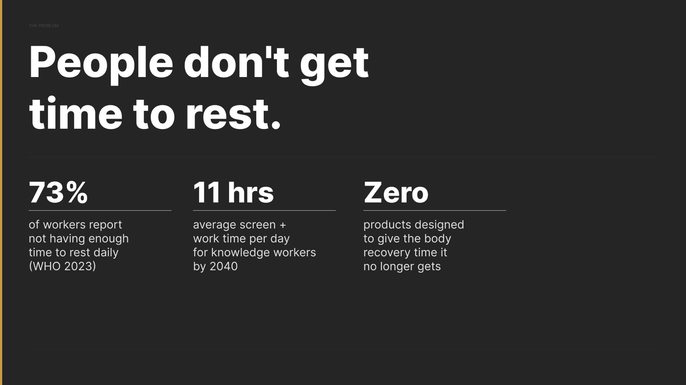
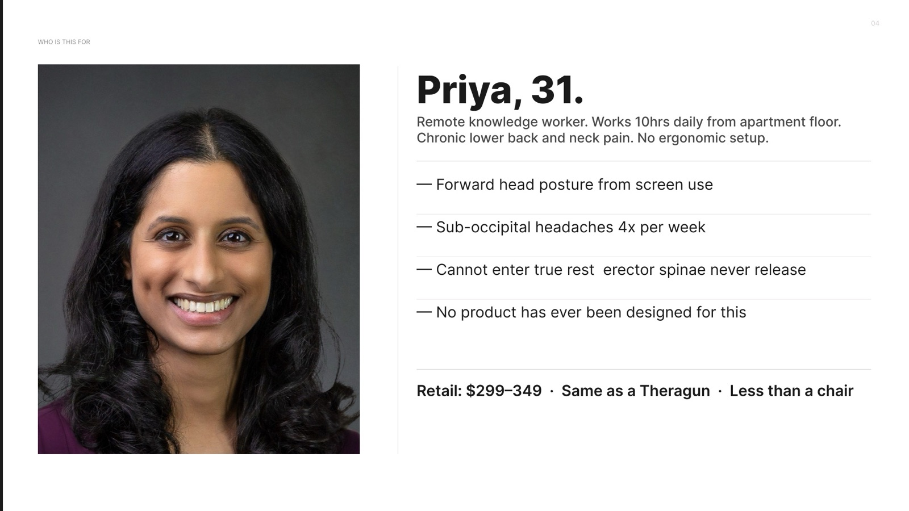
I started wide, with sticky-note sketches of furniture and spaces, before narrowing to a surface you lie on.
The form began as ridges and valleys shaped by hand in clay. I drew small figures on the photos to see how a body would rest on each one.
Clay was fast and honest. If a shape was uncomfortable to imagine lying on, it showed immediately.
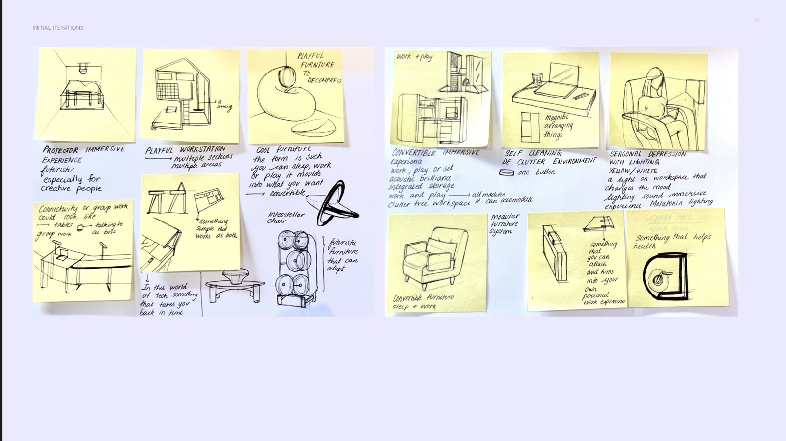
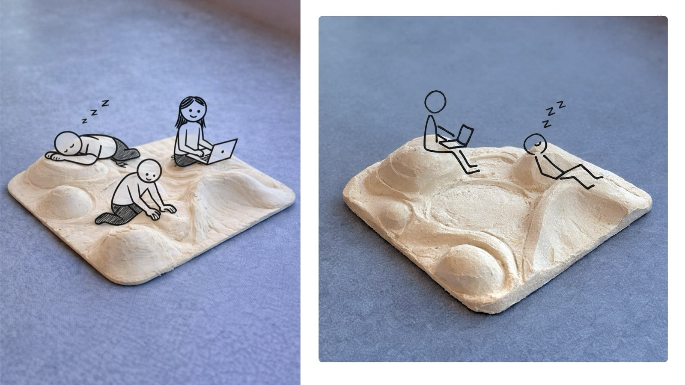
First forms, in clay.


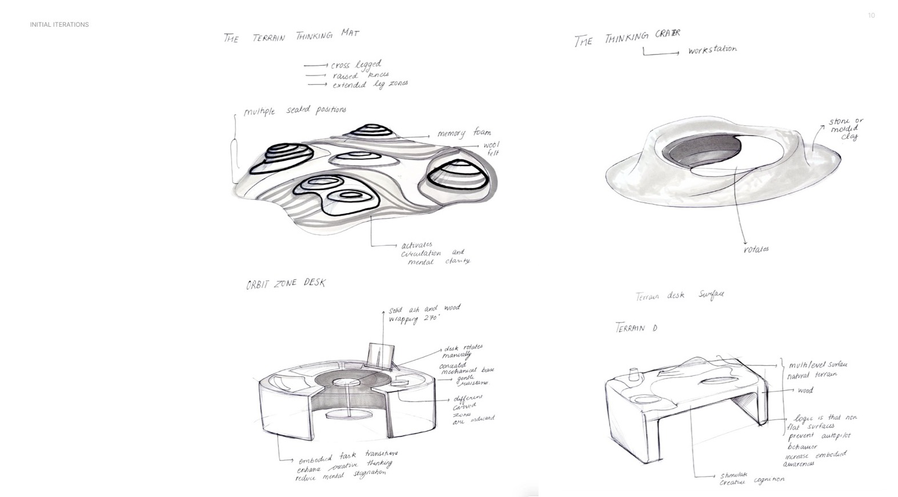
The surface went through several versions in 3D before the ridges and valleys settled.
Early versions were islands of shapes. The later ones follow the outline of a body, so you know where to lie without being told.
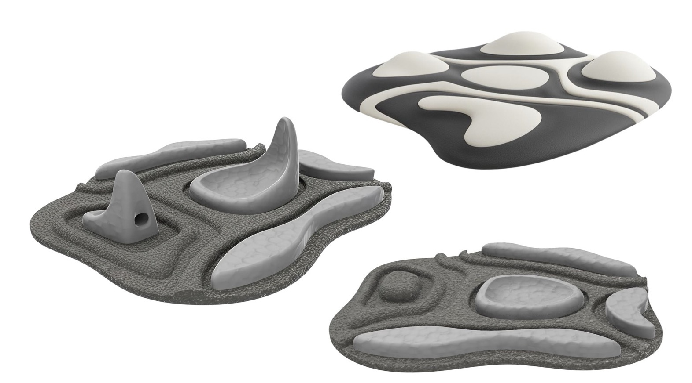
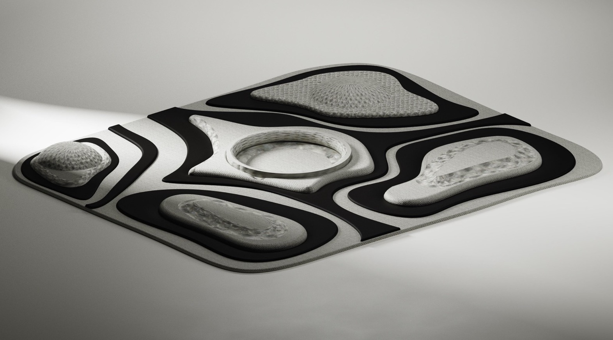
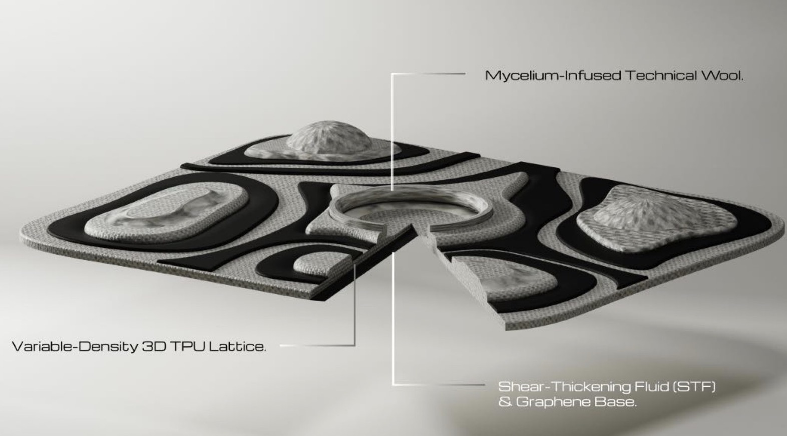
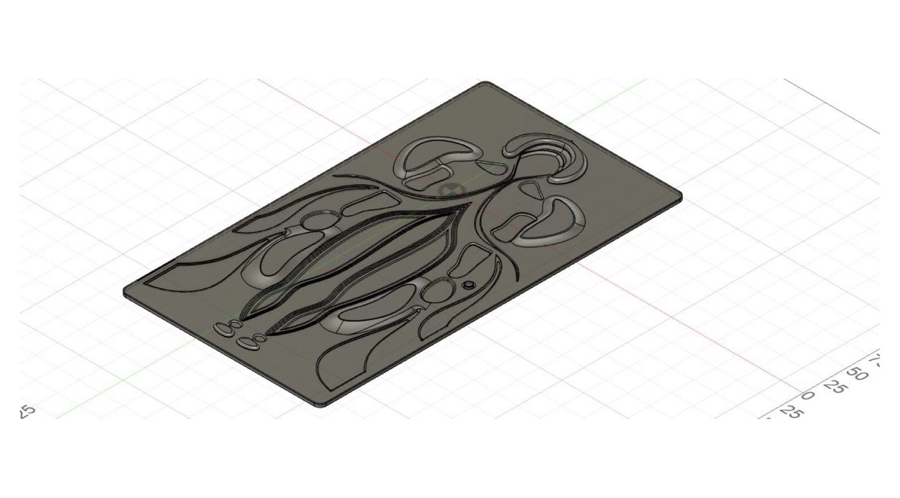
Each zone has its own form, because each part of the body needs something different.
A round dome supports the head. A saddle channel holds the neck. Two ridges run along the upper back so the spine never touches the surface. A raised dome fills the gap under the lower back.
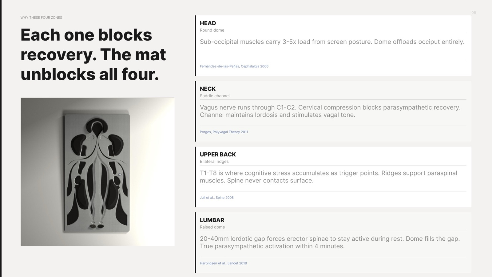
Using it takes three steps: lie down, the mat reads you, you recover.
Twelve pressure zones read how you are lying. A small controller decides how firm each zone should be, and a dial lets you override it. It can also take heart-rate data from a smartwatch.
This is not new technology. Car seats already adjust their lumbar support the same way. I moved the idea from the car to the floor.
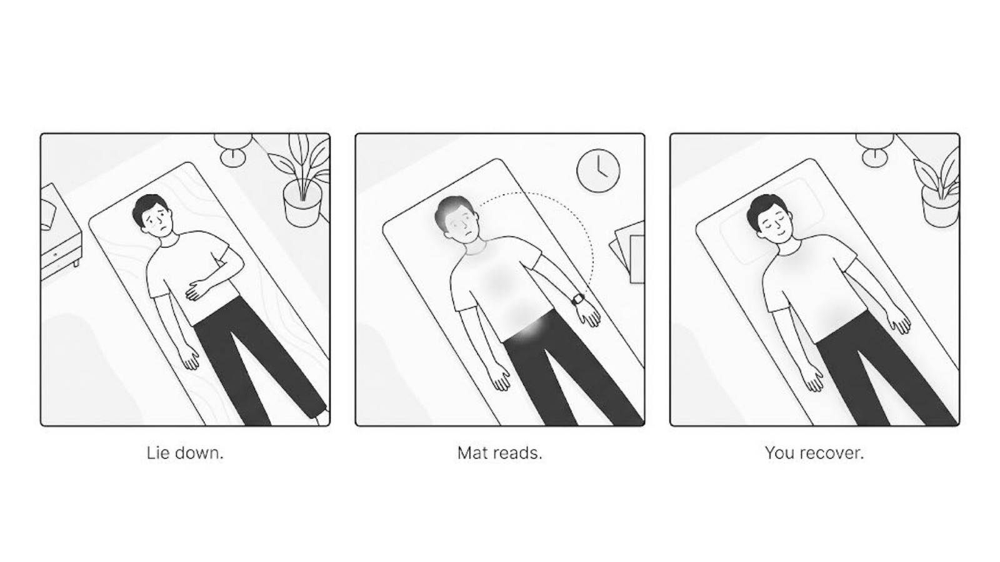
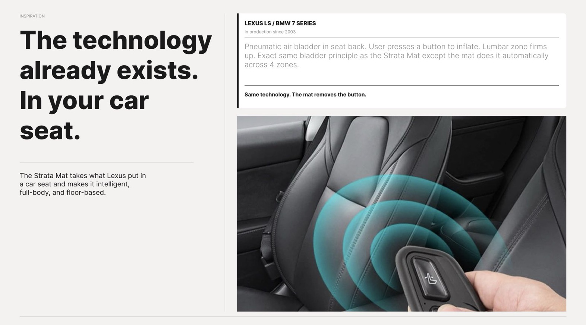
I only used materials and processes that are made today, because a concept is more useful when someone could build it.
From top to bottom: a knit skin, a 3D-printed lattice that is dense under the ridges and open under the valleys, foam inserts, a printed sensor grid, a microcontroller and a silicone base.
I estimated it could retail for $299 to $349, about the price of a massage gun.
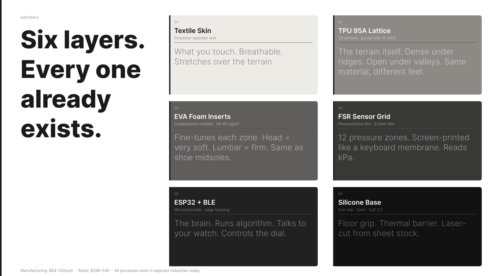
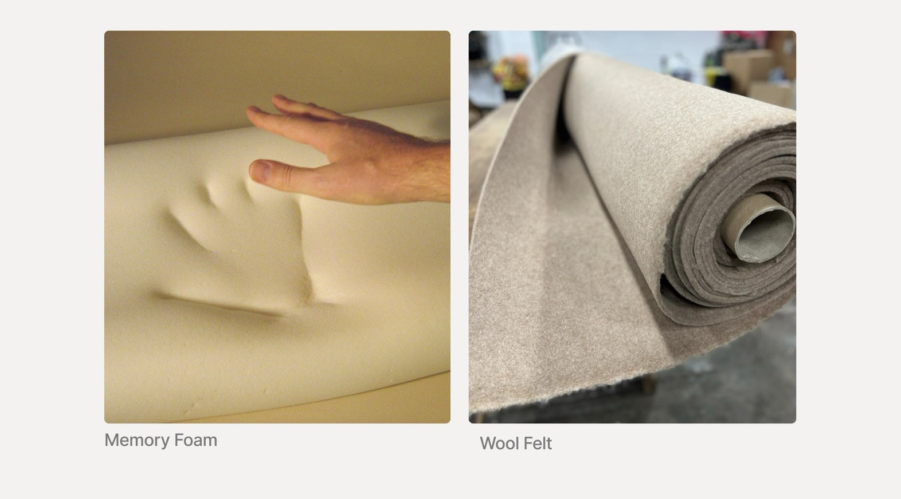
It sits on the floor like a rug, in three colours, and asks nothing of you but to lie down.
It is a concept. It has not been built or tested, and that would be the next step.
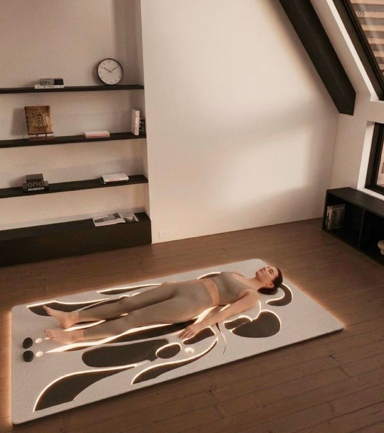
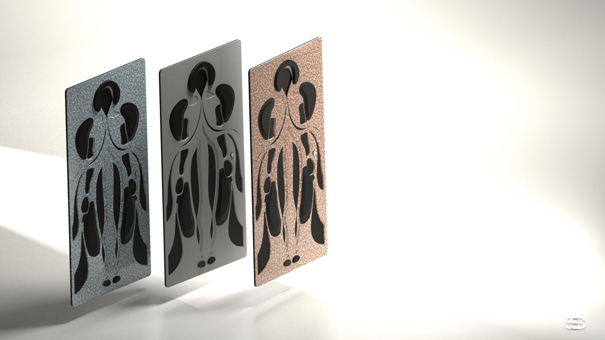
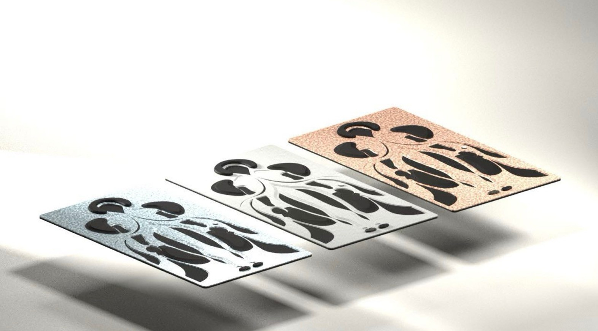
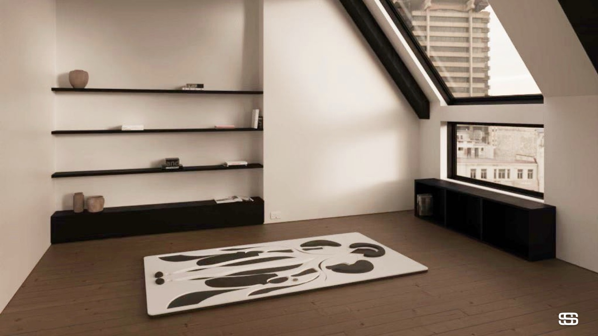